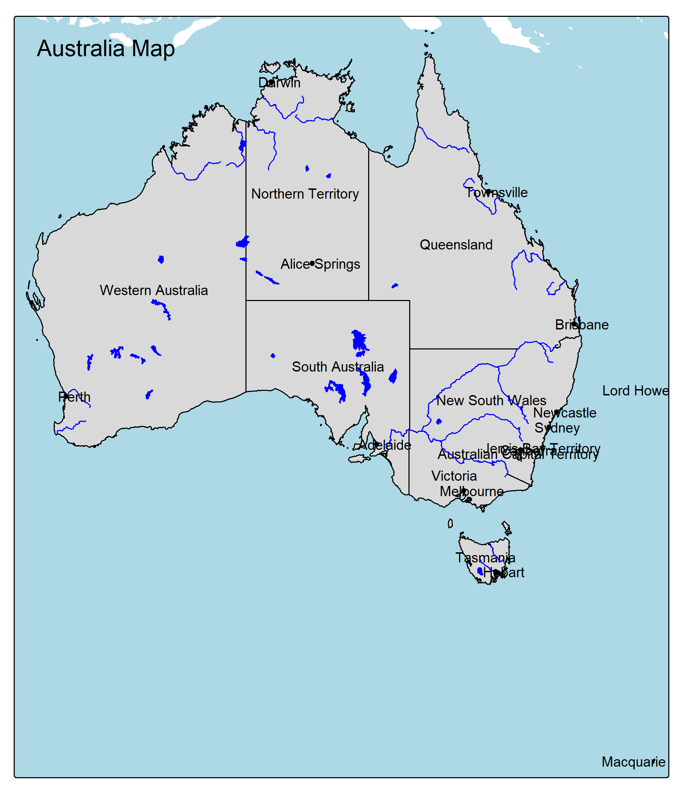

Linking to GEOS 3.12.2, GDAL 3.9.3, PROJ 9.4.1; sf_use_s2() is TRUElibrary(tmap)
root <- "D:/users/platt/shapefile/auxiliary/naturalearth/5.1.2"
marines <- st_read(file.path(root, "10m_physical", "ne_10m_geography_marine_polys.shp.zip"))Reading layer `ne_10m_geography_marine_polys' from data source
`C:\Users\platt\shapefile\auxiliary\naturalearth\5.1.2\10m_physical\ne_10m_geography_marine_polys.shp.zip'
using driver `ESRI Shapefile'
Simple feature collection with 306 features and 37 fields
Geometry type: MULTIPOLYGON
Dimension: XY
Bounding box: xmin: -180 ymin: -85.19206 xmax: 179.9999 ymax: 90
Geodetic CRS: WGS 84Geometry set for 306 features
Geometry type: MULTIPOLYGON
Dimension: XY
Bounding box: xmin: -180 ymin: -85.19206 xmax: 179.9999 ymax: 90
Geodetic CRS: WGS 84
First 5 geometries:MULTIPOLYGON (((179.5279 71.44019, 156.0424 77....MULTIPOLYGON (((-57.65469 -61.97275, -57.67637 ...MULTIPOLYGON (((-24.02137 64.87165, -24.02615 6...MULTIPOLYGON (((179.9999 50.98684, 179.9999 -0....MULTIPOLYGON (((179.9999 -60.53346, 166.0664 -6...[1] 2##~ nrow(marines)
##~ marines.lost <- marines[st_is_valid(marines), ] # Keep only valid geometries
##~ nrow(marines.lost)
##~ invalid <- !st_is_valid(marines)
##~ table(invalid)
##~ marines[invalid,] <- st_make_valid(marines[invalid,])
##~ nrow(marines)
##~ sum(!st_is_valid(marines)) # Count invalid geometries
##~ marines <- sf::st_buffer(marines,0)
##~ sum(!st_is_valid(marines)) # Count invalid geometries
##~ q()
admin <- st_read(file.path(root, "10m_cultural", "ne_10m_admin_1_states_provinces.shp.zip"))Reading layer `ne_10m_admin_1_states_provinces' from data source
`C:\Users\platt\shapefile\auxiliary\naturalearth\5.1.2\10m_cultural\ne_10m_admin_1_states_provinces.shp.zip'
using driver `ESRI Shapefile'
Simple feature collection with 4596 features and 121 fields
Geometry type: MULTIPOLYGON
Dimension: XY
Bounding box: xmin: -180 ymin: -90 xmax: 180 ymax: 83.6341
Geodetic CRS: WGS 84Reading layer `ne_10m_lakes' from data source
`C:\Users\platt\shapefile\auxiliary\naturalearth\5.1.2\10m_physical\ne_10m_lakes.shp.zip'
using driver `ESRI Shapefile'
Simple feature collection with 1355 features and 41 fields
Geometry type: MULTIPOLYGON
Dimension: XY
Bounding box: xmin: -165.9656 ymin: -50.66967 xmax: 177.1544 ymax: 81.95521
Geodetic CRS: WGS 84##~ lakes <- lakes[st_is_valid(lakes), ]
rivers <- st_read(file.path(root, "10m_physical", "ne_10m_rivers_lake_centerlines.shp.zip"))Reading layer `ne_10m_rivers_lake_centerlines' from data source
`C:\Users\platt\shapefile\auxiliary\naturalearth\5.1.2\10m_physical\ne_10m_rivers_lake_centerlines.shp.zip'
using driver `ESRI Shapefile'
Simple feature collection with 1473 features and 38 fields
Geometry type: MULTILINESTRING
Dimension: XY
Bounding box: xmin: -164.9035 ymin: -52.15775 xmax: 177.5204 ymax: 75.79348
Geodetic CRS: WGS 84Reading layer `ne_10m_admin_0_countries' from data source
`C:\Users\platt\shapefile\auxiliary\naturalearth\5.1.2\10m_cultural\ne_10m_admin_0_countries.shp.zip'
using driver `ESRI Shapefile'
Simple feature collection with 258 features and 168 fields
Geometry type: MULTIPOLYGON
Dimension: XY
Bounding box: xmin: -180 ymin: -90 xmax: 180 ymax: 83.6341
Geodetic CRS: WGS 84Reading layer `ne_10m_populated_places' from data source
`C:\Users\platt\shapefile\auxiliary\naturalearth\5.1.2\10m_cultural\ne_10m_populated_places.shp.zip'
using driver `ESRI Shapefile'
Simple feature collection with 7342 features and 137 fields
Geometry type: POINT
Dimension: XY
Bounding box: xmin: -179.59 ymin: -90 xmax: 179.3833 ymax: 82.48332
Geodetic CRS: WGS 84cities <- cities[cities$SCALERANK <= 3, ]
aus_bord <- countries[countries$NAME == "Australia", 1]
cities <- st_filter(cities, aus_bord)
aus_admin <- admin[admin$admin == "Australia", ]
my_map <- tm_shape(aus_bord) +
tm_polygons(alpha = 0, border.col = "black") +
tm_shape(marines) +
tm_polygons(col = "lightblue", border.col = "lightblue") +
# tm_text("name", size = 0.6, col = "darkblue", remove.overlap = TRUE) +
tm_shape(aus_admin) +
tm_polygons(border.col = "black") +
tm_text("name", size = 0.8, col = "black", shadow = TRUE, remove.overlap = TRUE) +
tm_shape(rivers) +
tm_lines(col = "blue", border.col = "blue") +
tm_shape(lakes) +
tm_polygons(col = "blue", border.col = "blue") +
tm_shape(cities) +
tm_dots(size = 0.3) +
tm_text("NAME", size = 0.8, just = c("left"), col = "black", xmod = 0.5) +
tm_layout(title = "Australia Map")── tmap v3 code detected ─────────────────────────────────────────────────────────────────────────────[v3->v4] `tm_polygons()`: use 'fill' for the fill color of polygons/symbols (instead of 'col'), and
'col' for the outlines (instead of 'border.col').
[v3->v4] `tm_polygons()`: use `fill_alpha` instead of `alpha`.
[v3->v4] `tm_text()`: migrate the layer options 'shadow' to 'options = opt_tm_text(<HERE>)'
[tm_lines()] Argument `border.col` unknown.
[v3->v4] `tm_text()`: migrate the layer options 'just' to 'options = opt_tm_text(<HERE>)'
[v3->v4] `tm_layout()`: use `tm_title()` instead of `tm_layout(title = )`
This message is displayed once every 8 hours.Map saved to australia_map_reproduced.png
Resolution: 1948.256 by 2263.563 pixels
Size: 6.494186 by 7.54521 inches (300 dpi)